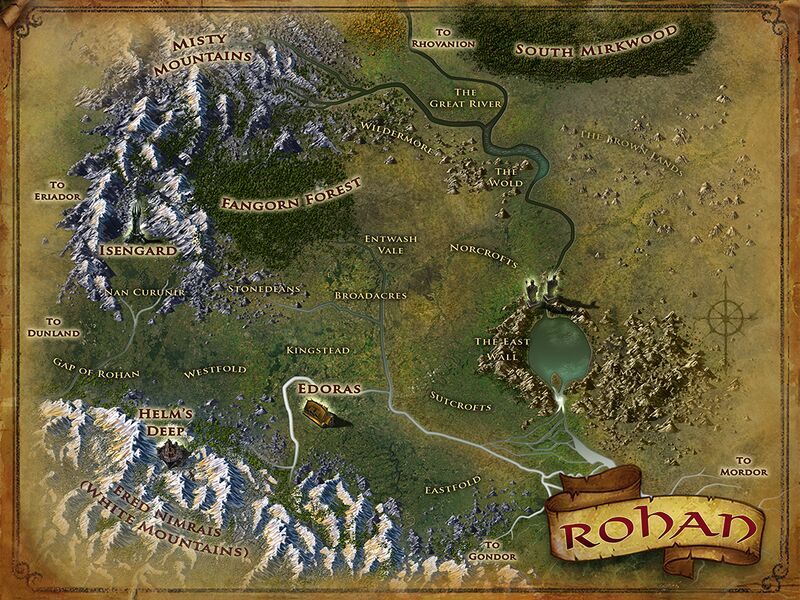
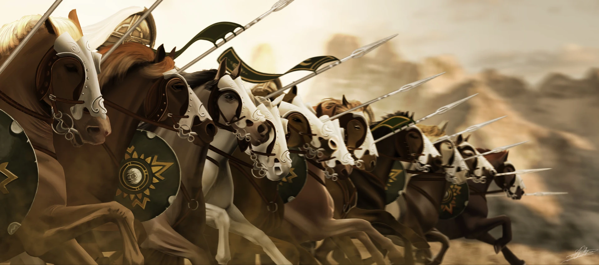

Le Rohan (Sindarin Pays du Cheval) est le territoire des Rohirrim, auparavant appelé Calenardhon lorsqu'il était une province du Gondor. Le royaume est divisé en plusieurs régions, dirigées par des Seigneurs résidant dans leurs capitales provinciales. Le Royaume est divisé en trois régions militaires, les Terres Royales, la Marche Ouest et la Marche Est dont la défense est assurée par trois Maréchaux de la Marche et leurs sous officiers.
 